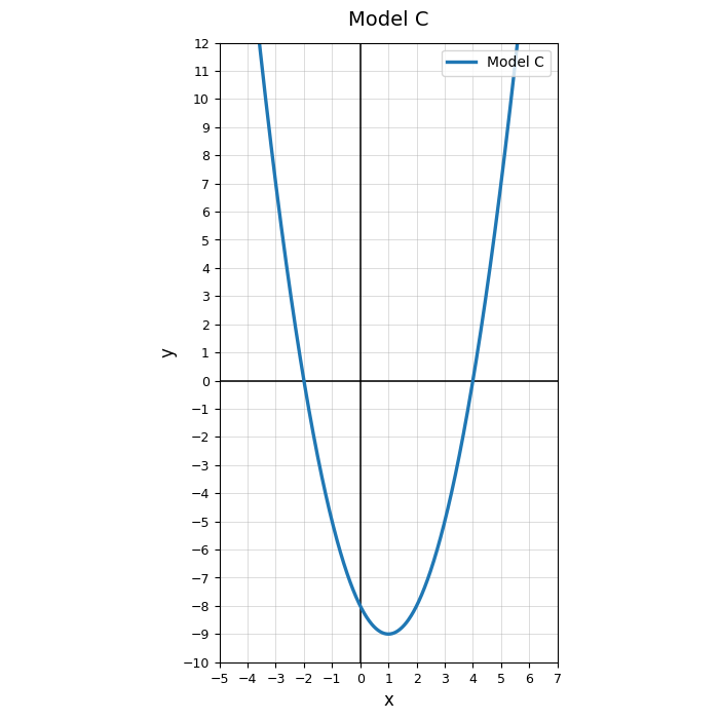

Find the missing term.
$$x^2+16x+\_\_$$
Solve using square roots.
$$(x-6)^2=13$$
Complete the square for $y=x^2+10x+18$ and identify the vertex. Explain what the completed-square form reveals.
Consider $(x+2)^2=9$, $(x+2)^2=0$, and $(x+2)^2=-9$. Explain why the equations have different numbers of real solutions.
Solve.
$$(x+9)(x-2)=0$$
Solve.
$$x(3x-12)=0$$
Use Model C. Estimate the $x$-intercepts.

Which equation is ready for the Zero Product Property?
Factor and solve.
$$x^2+2x-35=0$$
Rewrite and solve by factoring.
$$x^2-4x=21$$
A student solves $x^2-25=0$ and gets only $x=5$. Explain the missing solution.
A projectile model has zeros at $t=0$ and $t=7$. Write a possible factored equation for height and explain what the zeros mean in context.
State the vertex of $y=(x+5)^2-12$.
Write a factored form for a quadratic with zeros $-6$ and $4$.
A student says vertex form cannot help solve equations. Critique the statement using square roots.
Create a quadratic in vertex form with no real roots. Explain how the form shows that no real roots exist.